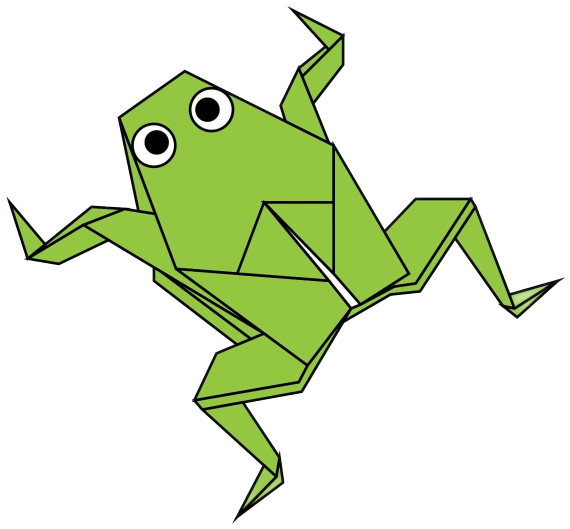

Camels
- Their humps let them store up to 80 pounds of fat which they can live off for weeks and even months.
- Camels have three sets of eyelids and two rows of eyelashes to keep sand out of their eyes.
- During the Second World War, tank drivers would drive their vehicles over camel droppings for good luck.
Camels

Chameleon
- Excluding their tail, some chameleons’ tongues can be twice the length of their body.
- Almost half of all known species live in the Madagascar.
- Chameleon eyes have a 360-degree arc of vision and can see two directions at once.
Chameleon

Piegons
- Piegons can find their way back to their nest from 1300 miles away.
- The first images of pigeons were found by archaeologists in Mesopotamia dating back to 3000BC.
- In both the First and Second World Wars, the pigeon saved hundreds of thousands of human lives by carrying messages across enemy lines.
Piegons

Teddy bears
- The teddy was named after President Theodore Roosevelt, after he refused to shoot a bear during a 1902 hunting trip.
- The largest collection of teddies ever auctioned belonged to American multi-million dollar investment scammer Paul Greenwood. His collection of 1,300 bears was auctioned at Christie’s for £1.1million.
- A teddy has been into space! Magellan T Bear boarded Space Shuttle Discovery in 1995 as part of a school project.
Teddy bears

Pandas
- A newborn panda cub is 1/900th the size of its mother and is comparable to the length of a stick of butter.
- A panda must spend 10 to 16 hours a day foraging and eating..
- Fossils of pandas have been dated between 1 and 2 million years old.
Pandas

Cicadas
- Cicadas can survive a huge fall as babies, or nymphs.
- Most have red-orange eyes.
- Their short adult life is not unusual for bugs.
Cicadas
Puppies
- The number of pups born each day overtakes the number of human babies that come into the world, with approximately 1.2 million pups to 360,000 babies.
- A puppy sleeps for 15-20 hours a day, almost more than a newborn baby.
- Puppies can be born green
Puppies
